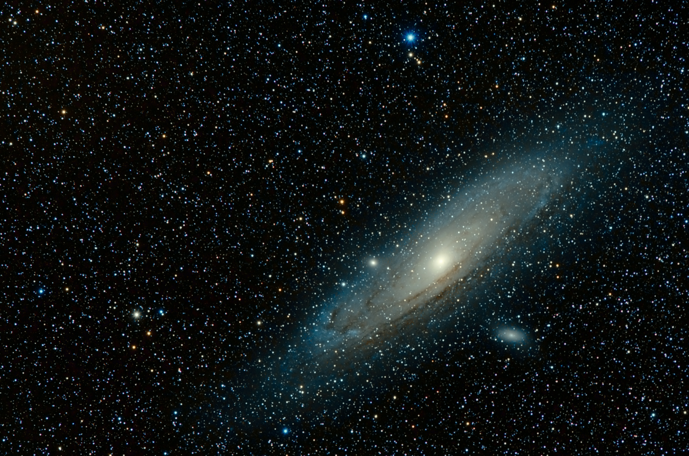

- 진화
- DNA
- NAVER
기쁨이자 생존의 도구이다.
원시 지구 대기의 주성분은 수소 원자를 여러 개 가진 간단한 구조의 분자들이었다. 이 분자들은 태양에서 복사된 자외선과 번개의 전기 방전을 통해서 쉽게 해리되었다. 분자에서 떨어져 나온 작은 원자와 분자들이 우연히 재결합아면서 더 복잡한 물질로 만들어졌다. 이렇게 생성된 화학 반응의 부산물들은 바다나 연못에 용해됐으면, 거기에서 점진적으로 더 복잡한 일종의 유기물 수프와 같은 물질로 서서히 변해갔다. 마침내 수프에 들어있던 다른 종류의 분자들을 바탕으로 하여 스스로를 비슷하게 복제할 수 있는 새로 분자가 아주 우연하게 만들어졌다.
이렇게 해서 앞으로 모든 지상 생명 현상의 주인공 구실을 하게 될 디옥시리보핵산분자, 다시말해 DNA의 원형이 탄생하게 된 것이다. DNA는 나선형으로 꼬인 긴 사다리와 비슷한 구조를 하고 있다. 사다리의 가로대는 각각 서로 다른 네 종류의 분자들로 이루어져 있다. 그것들이 바로 유전자코드를 기술하는 네 가지 부호이다.
- 2.DNA
- 3.NAVER
- DNA
- NAVER
- DNA
- NAVER
- 1.space
- 2.universe
- 3.cosmos
